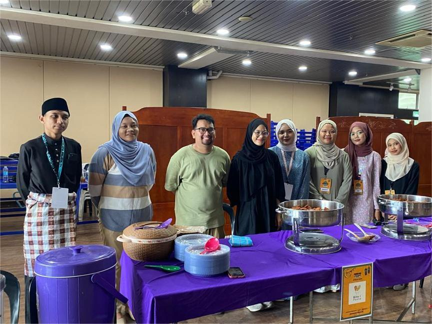

WELCOME TO MY PERSONAL WEBSITE MUHAMMAD FARIS IZZAT BIN MOHAMAD TARMIZI
MY FAVOURITE ACTIVITIES
Float images side by side:
"Favorite activities" refer to the tasks, hobbies, or pastimes that a person enjoys the most and prefers to engage in during their free time. These activities bring pleasure, relaxation, or a sense of fulfillment. Favorite activities can vary widely from person to person based on their interests, preferences, and lifestyle.
There are many things i like to do in my home or UiTM

Next my favourite activities is to hang out with friends in cafe or restaurant
i like to go eating or hang out with my friend because there is the place for me to relax and not care about any work or problem i faced in university or home
Spending time with friends provides a strong support system. Sharing experiences and feelings with friends can help reduce stress and provide comfort during difficult times.
.
Taking a break from daily routines and responsibilities to relax and have fun with friends can significantly reduce stress levels. It provides a mental break and helps rejuvenate the mind.